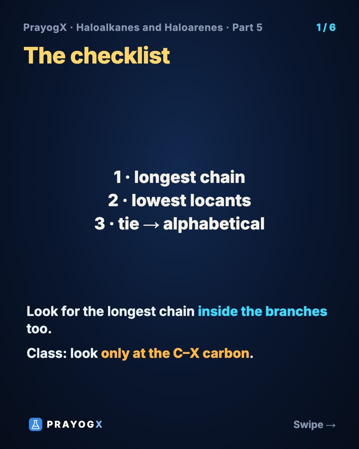
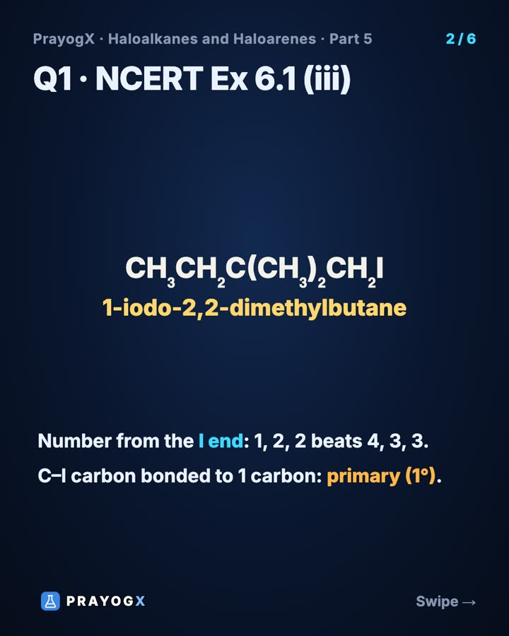
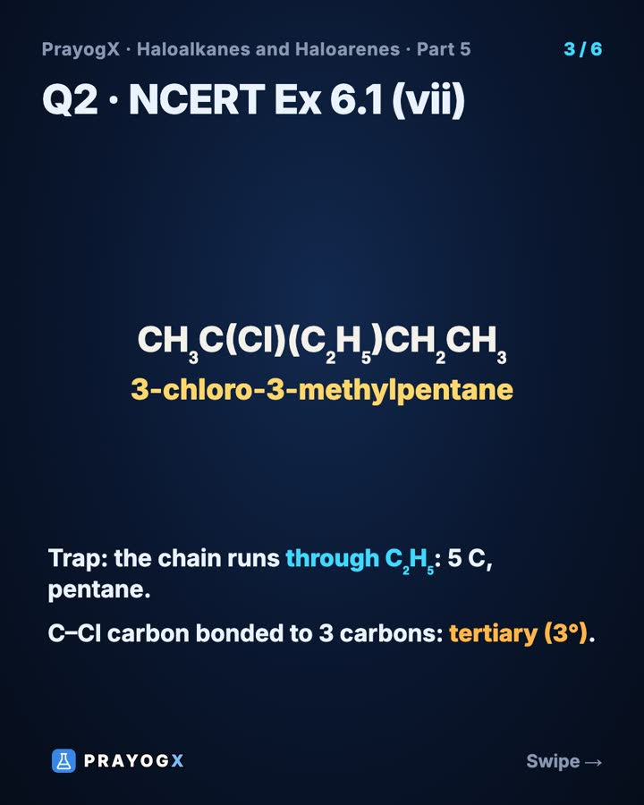
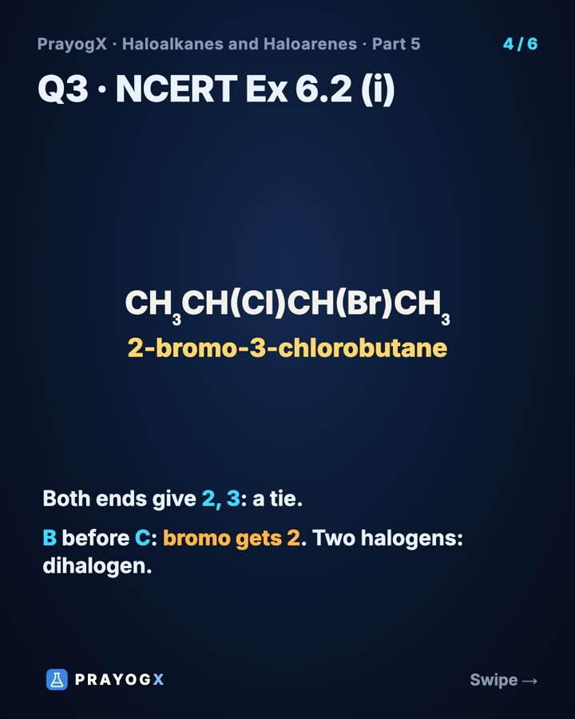
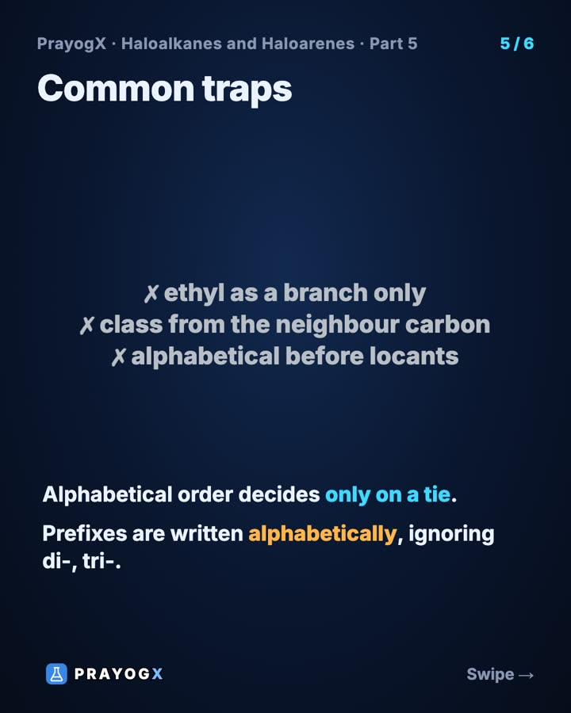
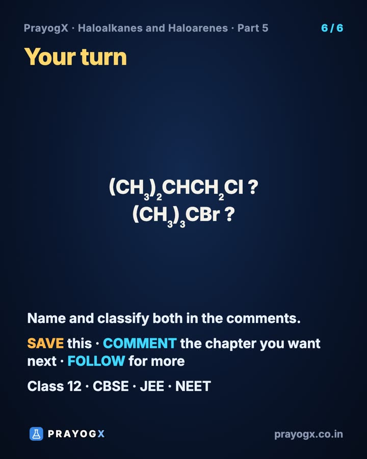

Chapter 6 · Chemistry
Name and Classify Haloalkanes: NCERT Questions Solved
Video not playing? YouTube
Three NCERT exercise questions solved with one checklist: longest chain (look inside the branches), lowest locants, alphabetical order on a tie; and the class (1°, 2°, 3°) is decided only by the carbon that carries the halogen. CH₃CH₂C(CH₃)₂CH₂I is 1-iodo-2,2-dimethylbutane (1°), CH₃C(Cl)(C₂H₅)CH₂CH₃ is 3-chloro-3-methylpentane (3°), and CH₃CH(Cl)CH(Br)CH₃ is 2-bromo-3-chlorobutane.
Download the short notesPDF, 210 KB · solved examples, practice set and answer key Download the memory cards
PDF, 680 KB · 6 cards: the whole topic at a glance, for quick revision Download the workbook
PDF, 194 KB · fill in the blanks, true/false, assertion-reason, MCQ, numericals, short answer, match the columns; detailed solutions at the end That's all the videos in this chapter so far Back to Haloalkanes and Haloarenes
Key points
- Checklist: longest chain → lowest locants → alphabetical order only on a tie.
- Class (1°, 2°, 3°) depends only on the carbon carrying X: how many carbons it is bonded to.
- CH₃CH₂C(CH₃)₂CH₂I = 1-iodo-2,2-dimethylbutane, a primary alkyl halide (NCERT Ex 6.1 iii).
- CH₃C(Cl)(C₂H₅)CH₂CH₃ = 3-chloro-3-methylpentane, tertiary: the chain runs through C₂H₅ (Ex 6.1 vii).
- CH₃CH(Cl)CH(Br)CH₃ = 2-bromo-3-chlorobutane: {2,3} both ways, B before C (Ex 6.2 i).
The three questions in the video
| NCERT | Structure | IUPAC name | Class |
|---|---|---|---|
| Ex 6.1 (iii) | CH₃CH₂C(CH₃)₂CH₂I | 1-iodo-2,2-dimethylbutane | 1° alkyl halide |
| Ex 6.1 (vii) | CH₃C(Cl)(C₂H₅)CH₂CH₃ | 3-chloro-3-methylpentane | 3° alkyl halide |
| Ex 6.2 (i) | CH₃CH(Cl)CH(Br)CH₃ | 2-bromo-3-chlorobutane | dihalogen compound |
More NCERT Exercise 6.1 answers
| Structure | IUPAC name | Class |
|---|---|---|
| (CH₃)₂CHCH(Cl)CH₃ | 2-chloro-3-methylbutane | 2° alkyl |
| CH₃CH₂CH(CH₃)CH(C₂H₅)Cl | 3-chloro-4-methylhexane | 2° alkyl |
| CH₃C(C₂H₅)₂CH₂Br | 1-bromo-2-ethyl-2-methylbutane | 1° alkyl |
| CH₃CH=C(Cl)CH₂CH(CH₃)₂ | 3-chloro-5-methylhex-2-ene | vinylic |
| CH₃CH=CHC(Br)(CH₃)₂ | 4-bromo-4-methylpent-2-ene | allylic |
| p-ClC₆H₄CH₂CH(CH₃)₂ | 1-chloro-4-(2-methylpropyl)benzene | aryl |
| m-ClCH₂C₆H₄CH₂C(CH₃)₃ | 1-chloromethyl-3-(2,2-dimethylpropyl)benzene | 1° benzylic |
Common mistakes
- Treating C₂H₅ as only a branch: the longest chain can run through it.
- Judging 1°/2°/3° from the crowded neighbour carbon instead of the C–X carbon.
- Numbering from the wrong end (4-iodo-3,3-dimethylbutane ✗).
- Using alphabetical order before the lowest-locant rule: it only breaks a tie.
Memory cards
Swipe through the 6 cards to revise this topic in a minute.






PDF, 680 KB · 6 cards: the whole topic at a glance, for quick revision
Quick quiz
10 questions. Choose an answer for each, then submit to see your score and the explanations.
More from Haloalkanes and Haloarenes
 Alkyl, Vinyl, Allyl and Aryl Halides: Which Carbon Holds X?Alkyl, vinyl (vinylic), allyl (allylic) and aryl halides differ only in the carbon that holds the halogen. Alkyl: a saturated sp³ carbon (1°, 2°, 3° by the alkyl groups on it). Vinyl: X directly on a carbon of a C=C (sp²). Allyl: X on the sp³ carbon next to a C=C. Aryl: X directly on a carbon of an aromatic ring (sp²), e.g. chlorobenzene. Bonus: X on the sp³ CH₂ next to a benzene ring is a benzyl (benzylic) halide. Identify the carbon attached to X: that's the key.Chemistry
Alkyl, Vinyl, Allyl and Aryl Halides: Which Carbon Holds X?Alkyl, vinyl (vinylic), allyl (allylic) and aryl halides differ only in the carbon that holds the halogen. Alkyl: a saturated sp³ carbon (1°, 2°, 3° by the alkyl groups on it). Vinyl: X directly on a carbon of a C=C (sp²). Allyl: X on the sp³ carbon next to a C=C. Aryl: X directly on a carbon of an aromatic ring (sp²), e.g. chlorobenzene. Bonus: X on the sp³ CH₂ next to a benzene ring is a benzyl (benzylic) halide. Identify the carbon attached to X: that's the key.Chemistry Naming Haloalkanes and Haloarenes: Common and IUPAC NamesEvery halide has two correct names. The common name is the alkyl group + halide (isopropyl chloride, ethyl chloride). The IUPAC name writes the halogen as a prefix (fluoro, chloro, bromo, iodo) on the longest chain, numbered from the end that gives the lowest locants; when both ends tie, alphabetical order decides (2-bromo-3-methylbutane). On benzene one halogen keeps the same name (chlorobenzene); two use o-, m-, p- in common names and 1,2 / 1,3 / 1,4 in IUPAC.Chemistry
Naming Haloalkanes and Haloarenes: Common and IUPAC NamesEvery halide has two correct names. The common name is the alkyl group + halide (isopropyl chloride, ethyl chloride). The IUPAC name writes the halogen as a prefix (fluoro, chloro, bromo, iodo) on the longest chain, numbered from the end that gives the lowest locants; when both ends tie, alphabetical order decides (2-bromo-3-methylbutane). On benzene one halogen keeps the same name (chlorobenzene); two use o-, m-, p- in common names and 1,2 / 1,3 / 1,4 in IUPAC.Chemistry One Atom, Many Lives: Haloalkanes and HaloarenesIn 1847 James Simpson found that chloroform, CHCl₃, could put people to sleep for surgery. Replace a hydrogen of a hydrocarbon with a halogen and you get a haloalkane (halogen on an sp³ alkyl carbon) or a haloarene (halogen on an sp² ring carbon). They are everywhere: chloramphenicol for typhoid, thyroxine with four iodine atoms, chloroquine for malaria, halothane for anaesthesia. The polar C–X bond, with a δ+ carbon, is why they react, and it opens the whole chapter.Chemistry · 9:16 + 16:9
One Atom, Many Lives: Haloalkanes and HaloarenesIn 1847 James Simpson found that chloroform, CHCl₃, could put people to sleep for surgery. Replace a hydrogen of a hydrocarbon with a halogen and you get a haloalkane (halogen on an sp³ alkyl carbon) or a haloarene (halogen on an sp² ring carbon). They are everywhere: chloramphenicol for typhoid, thyroxine with four iodine atoms, chloroquine for malaria, halothane for anaesthesia. The polar C–X bond, with a δ+ carbon, is why they react, and it opens the whole chapter.Chemistry · 9:16 + 16:9 Count the Halogens: Mono, Di, Poly, Gem and VicHalogen compounds are classified first by the number of halogen atoms: one is mono, two is di, three or more is poly (tri-, tetra-). Count the halogens, not the carbons: chloroform, CHCl₃, has one carbon but three chlorines, so it is a polyhalogen compound. Dihalides split by position: both halogens on the same carbon is a gem-dihalide (alkylidene halide, e.g. ethylidene chloride, 1,1-dichloroethane); on adjacent carbons a vic-dihalide (alkylene dihalide, e.g. ethylene dichloride, 1,2-dichloroethane).Chemistry
Count the Halogens: Mono, Di, Poly, Gem and VicHalogen compounds are classified first by the number of halogen atoms: one is mono, two is di, three or more is poly (tri-, tetra-). Count the halogens, not the carbons: chloroform, CHCl₃, has one carbon but three chlorines, so it is a polyhalogen compound. Dihalides split by position: both halogens on the same carbon is a gem-dihalide (alkylidene halide, e.g. ethylidene chloride, 1,1-dichloroethane); on adjacent carbons a vic-dihalide (alkylene dihalide, e.g. ethylene dichloride, 1,2-dichloroethane).Chemistry